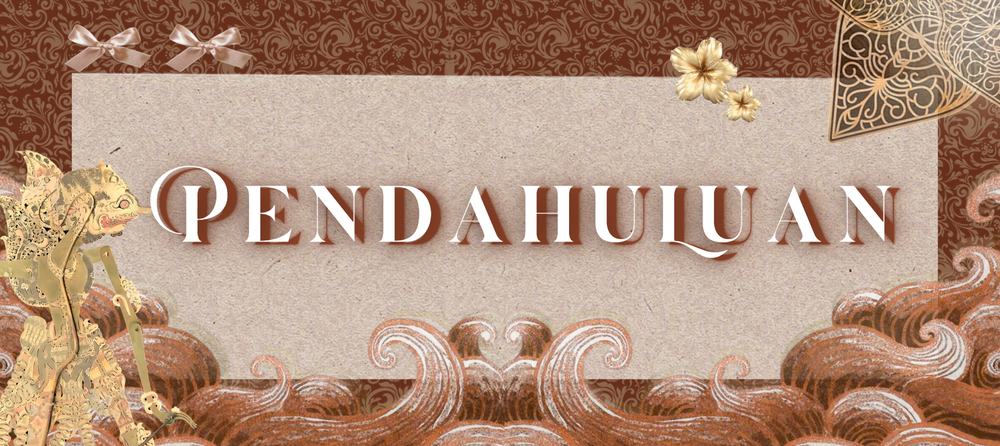
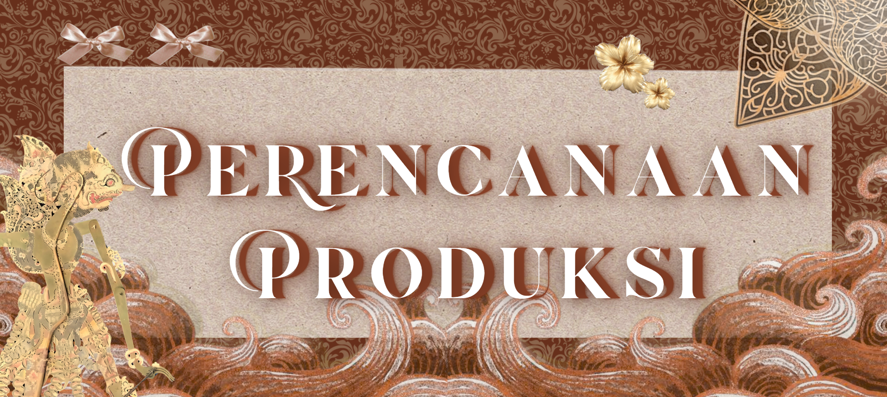
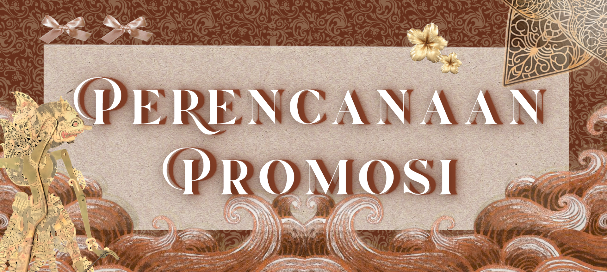

Kami menyarankan sekolah untuk melakukan tiga hal ini, yaitu:
1. Melanjutkan kegiatan bazaar untuk pembangunan karakter dan program edukasi siswi. Kami percaya bahwa kegiatan bazaar kelas 9 yang diadakan setiap tahun membangun berbagai macam kemampuan siswi, dari kemampuan bekerja kelompok, pembangunan karakter dan integritas, hingga kemampuan praktis menghitung uang dan menyusun sebuah bisnis.
2. Melakukan evaluasi pasca kegiatan untuk mengidentifikasi kekurangan maupun kelebihan yang ada, agar kegiatan ini dapat dikembangkan ke angkatan-angkatan kedepannya.
3. Mempertimbangkan untuk memperluas skala kegiatan bazaar dan juga mendukung pengembangan lebih lanjut dalam bentuk lainnya di tahun-tahun mendatang. Comtohnya mengundang tamu dari luar sekolah seperti orang tua siswi, alumni, maupun masyarakat umum dalam skala dan jumlah pelanggan yang lebih banyak lagi.
Kami menyarankan para guru, staff, dan panitia untuk melakukan hal-hal ini, yaitu:
1. Melanjutkan bantuan dan dukungan kepada siswi dalam proses kegiatan ini. Bimbingan guru, staff, dan panitia yang konsisten sangat membantu dalam proses perencanaan hingga pelaksanaan bazaar, baik secara individu maupun kelompok dan juga berkontribusi kepada kelancaran kegiatan dalam skala besar.
2. Memberikan panduan atau timeline yang lebih terstruktur, terutama di bagian awal atas segala tugas dengan contohnya agar dapat dilaksanakan dengan baik dan memaksimalkan waktu dan performa dalam seluruh perencanaan dan rangkaian kegiatan.
3. Menerima dan mengevaluasi saran dan performa tahun-tahun sebelumnya untuk tahun-tahun mendatang.
4. Menjalani komunikasi dan perencanaan terbuka, transparan, demokratis, dan efisien selama proses perencanaan dan juga berjalannya acara agar semua orang yang terlibat, baik penjual dan kelompok-kelompok yang mempersiapkan booth dan bazaar, hingga konsumen dan tamu undangan. Mengutamakan menyajikan informasi yang jelas dan tepat waktu.
Kami menyarankan para siswi untuk terus melakukan pengelolaan keuangan dengan bijak dan menerapkan pola hidup hemat dalam kehidupan sehari-hari. Pengalaman bazar ini dapat menjadi titik awal untuk memahami pentingnya perencanaan keuangan, terutama sebagai siswi yang harus menabung.